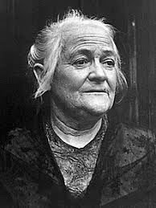

In the news

- Edwin Catmull (pictured) and Pat Hanrahan are awarded the Turing Award for their work on computer-generated imagery.
- Paleontologists announce the identification of the fossilized skull of Asteriornis maastrichtensis, the oldest evidence of modern birds, dating to the Mesozoic era.
- The World Health Organization recognises the coronavirus outbreak as a pandemic.
On this day

- 1279 – Mongol conquest of Song China: Emperor Bing, the last emperor of the Song dynasty, was killed by his official Lu Xiufu after losing the Battle of Yamen, bringing the dynasty to an end after three centuries.
- 1911 – Established by Clara Zetkin (pictured), Käte Duncker, and others, the first International Women's Day was observed.
- 1962 – Influential American musician Bob Dylan released his eponymous debut album, mainly comprising traditional folk songs.
- 1987 – American televangelist Jim Bakker resigned as the host of The PTL Club in the midst of a sex scandal.
- 2016 – Flydubai Flight 981 crashed during an aborted landing at Rostov-on-Don Airport, Russia, resulting in the deaths of all 62 passengers and crew on board.